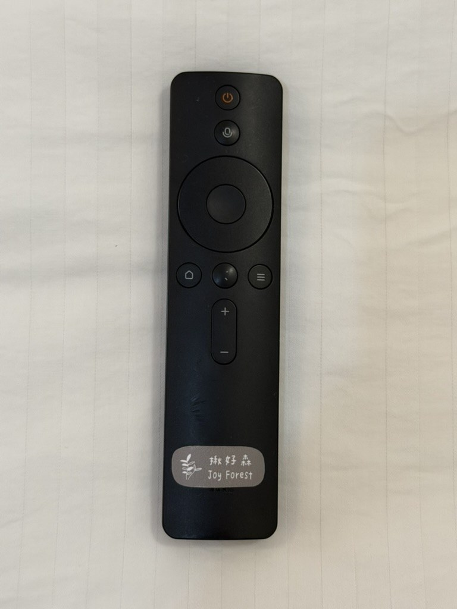
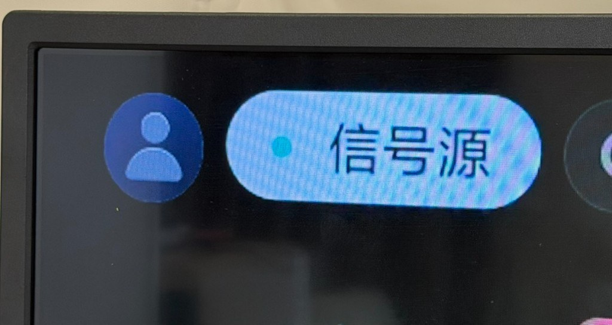
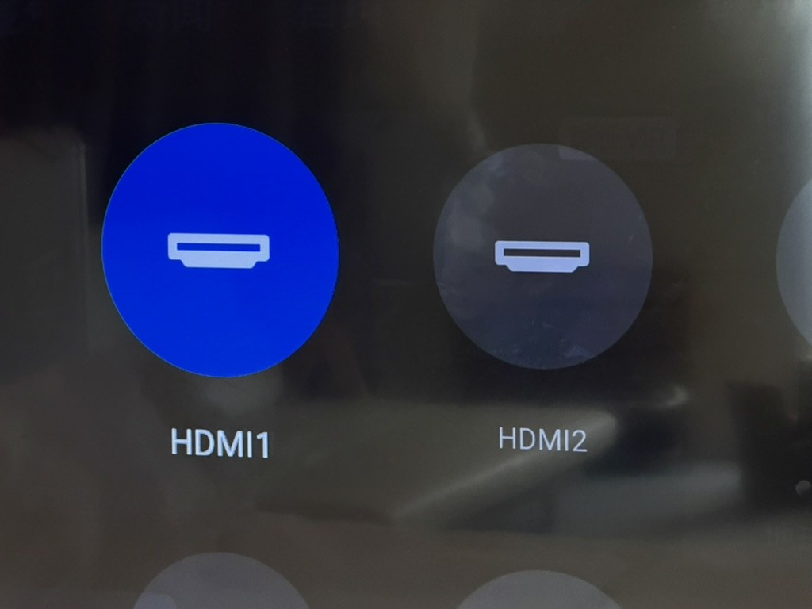
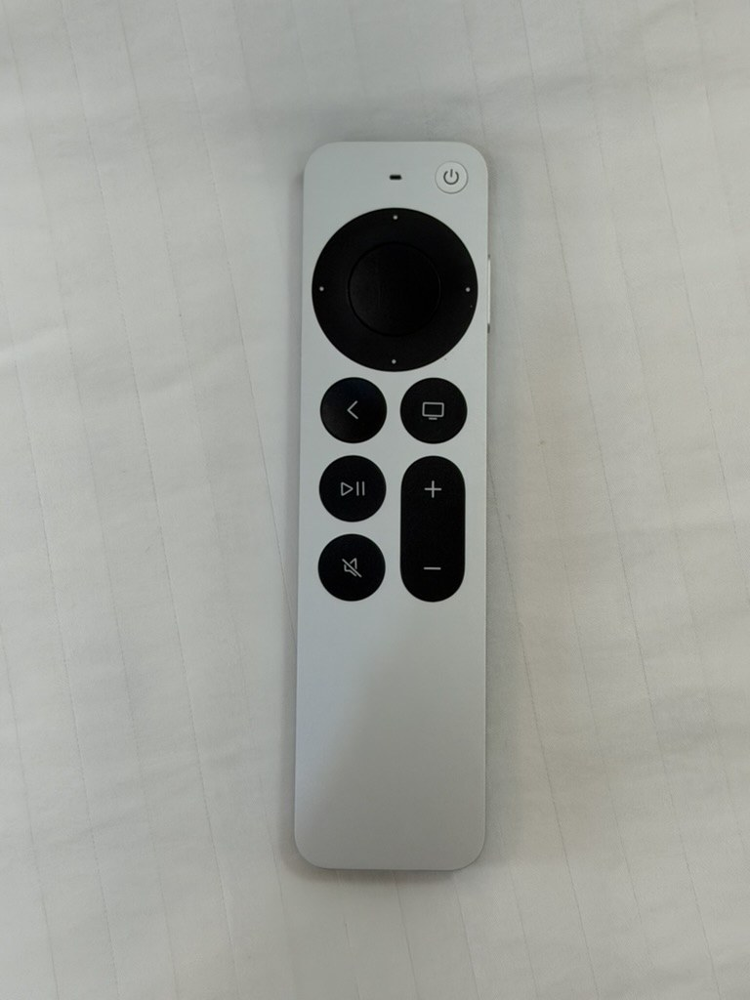
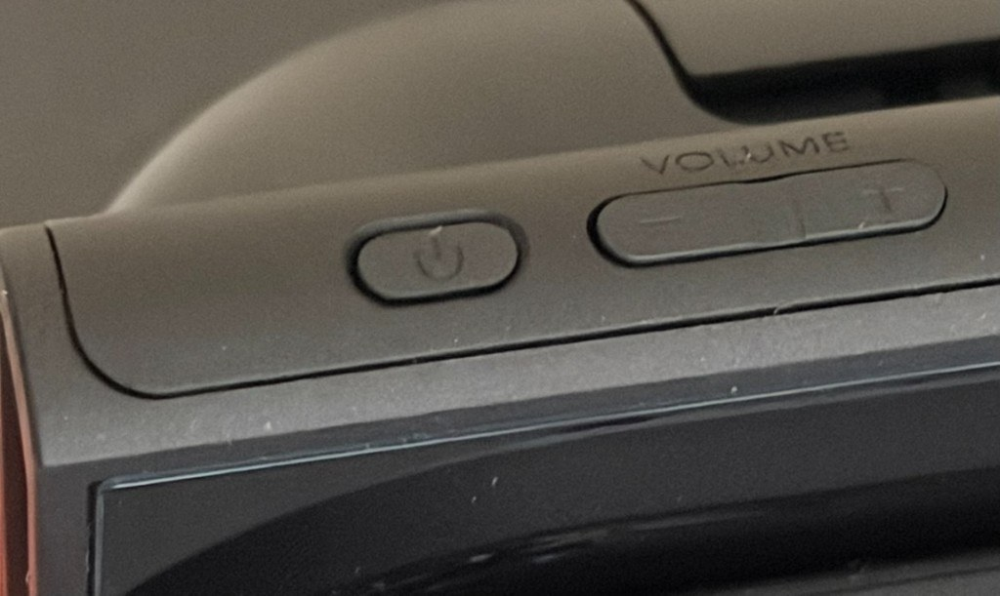
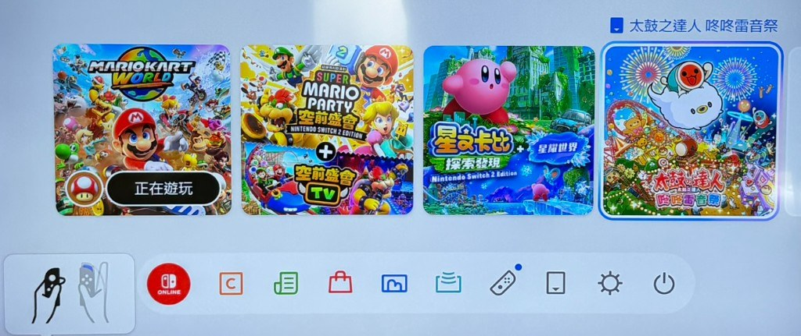

步驟 1｜按下電視遙控器電源鍵
請使用黑色電視遙控器。按最上方的橘色電源鍵即可開啟電視。方向鍵與中間確認鍵，之後用來點選畫面上的訊號源與 HDMI。
簡單記兩件事：用電視遙控器開機與切換訊號源；要用 Apple TV 時再拿Apple TV 遙控器操作。訊號源裡，HDMI1 是 Apple TV，HDMI2 是 Switch 2。

請使用黑色電視遙控器。按最上方的橘色電源鍵即可開啟電視。方向鍵與中間確認鍵，之後用來點選畫面上的訊號源與 HDMI。

電視開啟後，請看畫面左上角，點選「訊號源」（畫面上可能顯示為「信号源」）。進入後即可選擇要連接的裝置。

用電視遙控器左右移動，按中間確認鍵即可切換。

當訊號源選在 HDMI1 時，請改用銀色的 Apple TV 遙控器操作。上方圓形觸控板可移動游標與確認，下方有返回、音量等按鍵。
若要唱歌，可另見 卡拉OK使用說明。

先將電視訊號源切到 HDMI2。Switch 主機放在充電／手把底座上，手把可直接取下使用。

請按 Switch 機身角落的電源鍵（圖中標示電源符號的按鍵）即可喚醒／開啟主機。開機後電視畫面會出現 Switch 主畫面。

遊戲都已儲存在 Switch 主機裡，進入主畫面後點選想玩的遊戲即可，不必另外下載。常見如瑪利歐賽車、瑪利歐派對、星之卡比、太鼓之達人等，可依主機畫面實際顯示為準。